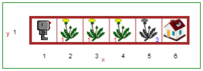
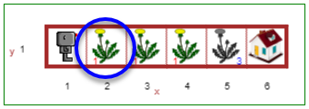
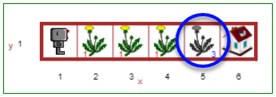

Kartais Robotukui gali prireikti paimti ant žemės gulintį daiktą arba padėti nešamą daiktą. Galite naudoti funkciją
paimti(), kad lieptumėte Robotukui paimti ant žemės esantį objektą. Norėdami padėti objektą, kurį
Robotukas neša, naudokite funkciją padėti().
2 lygio pasaulyje tarp Robotuko ir jo namo yra trys pienės. Jūsų užduotis - jas pakelti (paimti), tada sudėti (padėti) į šiukšlių dėžę, kuri yra tiesiai priešais namą, ties (5, 1).
Ant žemės esantis daiktas vaizduojamas spalvotu paveikslėliu, o kairėje paveikslėlio pusėje esantis raudonas skaičius rodo, kiek tokių daiktų yra. Pavyzdžiui, ties (2, 1) yra viena pienė.
Jei yra tam tikra vieta, į kurią reikia padėti objektus (dar vadinama tikslu), ji vaizduojama pilkos spalvos paveikslėliu, o dešinėje paveikslėlio pusėje esantis mėlynas skaičius rodo, kiek objektų tikimasi padėti toje vietoje. Pavyzdžiui, pozicijoje (5,1) Robotukas turi padėti 3 pienes.
Atidaryk antrą Robotuko aplinkos lygį.
Duokite Robotukui reikiamas komandas, kad jis surinktų kiaulpienes, išmestų jas į šiukšliadėžę ir grįžtų namo!
Lygis 1: Parvesk Robotuką namo ir išsaugok savo darbą Turinys Lygis 3: Pasisukimas į kairę ir žingsniavimas per kodą